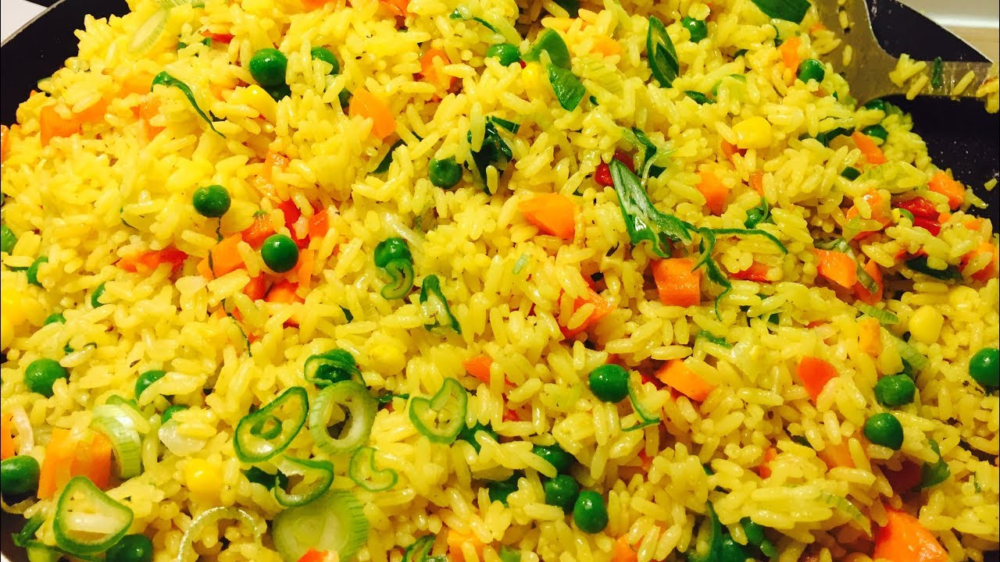
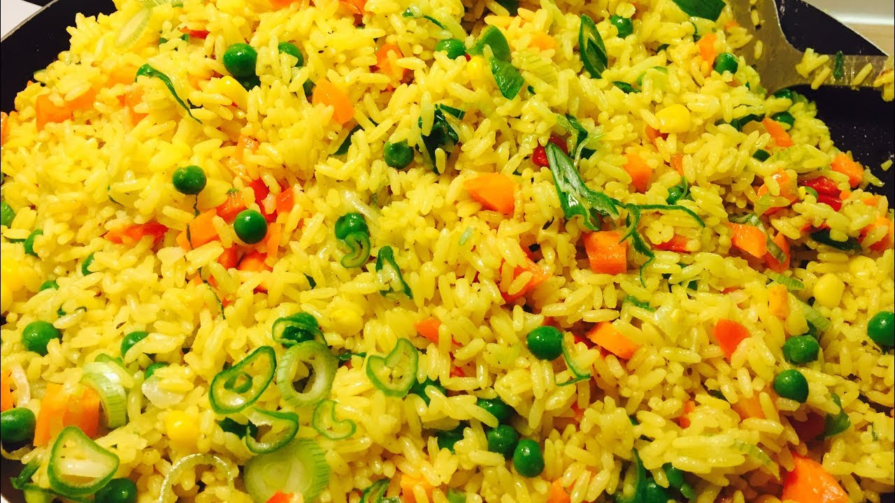

My Favourite Meal
Fried Rice
Origin
Fried rice is one of the most widely eaten Nigerian food. Almost every Nigerian accepts it both at home and in diaspora.
It is often served with fried chicken. You can grill your chicken instead
Ingredients
| S/N | Name | Measurement |
|---|---|---|
| 1 | Rice | 4cups |
| 2 | Sliced Cabbage | 5cups |
| 3 | Sliced Carrot | 2cups |
| 4 | Green beans | 2cups |
| 5 | Peas | 1/2cups |
| 6 | Sliced Green pepper | 1cup |
| 7 | Cow Liver | 300g |
| 8 | Chicken | 2kg |
| 9 | Vegetable Oil | 200ml |
| 10 | Curry Powder | 2 Tablespoons |
| 11 | Sliced Onions | 1cup |
| 12 | Salt | To Taste |
| 13 | Pepper | To Taste |
Preparation
Step 1
Parboil chicken and liver (both together) with all the spices (a teaspoon of salt, half cup of sliced onions, a teaspoon of thyme spice, a teaspoon of curry, two seasoning cubes, one teaspoon each of powdered ginger and garlic). Allow the meat to cook for ten to fifteen minutes, taste for salt, then pick out and deep-fry. Be sure to reserve the stock (meat water).
Step 2
Chop the cabbage, green beans, carrot, liver and set aside in a wide tray. You can use just a knife and chopping board or a tray. Remove the white center seeds from the green pepper and also slice and set aside.
Step 3
Parboil the 4 cups of rice also and cook with half of the meat stock (water from the meat) and two cups of water, cook until it is about 70% done. Observe the rice closely. It doesn’t need to be too soft or too hard, just almost done.
Step 4
Set your cooking pot on heat, allow drying, then pour in about 200ml of vegetable oil.
Note: It is better to continue with the same oil you used while frying the meat (that is only if you fried the meats), you can reduce it to 200ml.
Step 5
Allow heating, then add the sliced onions, stir for 1-2 minutes. Then add the chopped carrot and green beans, any of these two can actually go first. Add the chopped liver and sweet corn, stir.
Meat stock (water from the meat) should follow, add ground pepper (optional), add a teaspoon of salt and, add 1 seasoning cube then stir and taste, you may add more salt. Add the green peas.
Step 6
Stir for 1-2 minutes then add cabbage and the curry powder (add and stir till you are satisfied with the color)
You would have a yellowish mixture that would often taste overly spiced, don’t worry the rice would balance the taste. If you are satisfied with the taste, then add the green pepper, stir.
Step 7
Add the almost-done white rice and stir. Stir all together, cover your pot and allow to simmer for 5-7 minutes.
Step 8
Your Fried Rice is ready!! Serve with the fried or grilled meat (chicken)
Sample Photos
Your tasty fried rice should look like any of these
 
